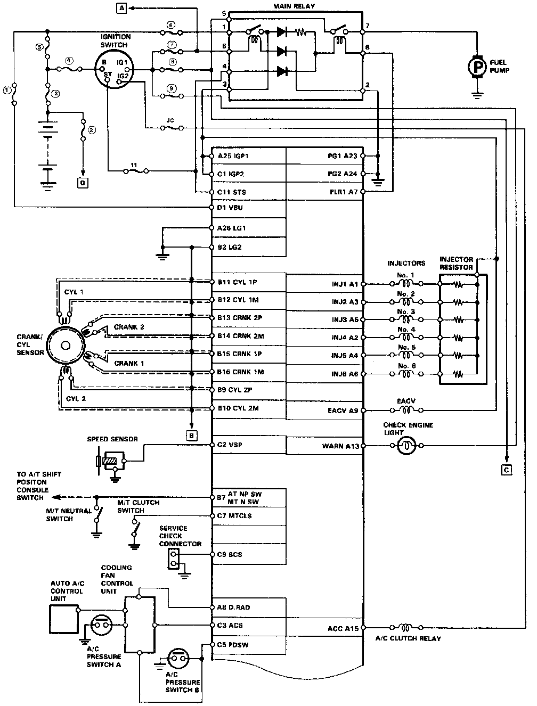
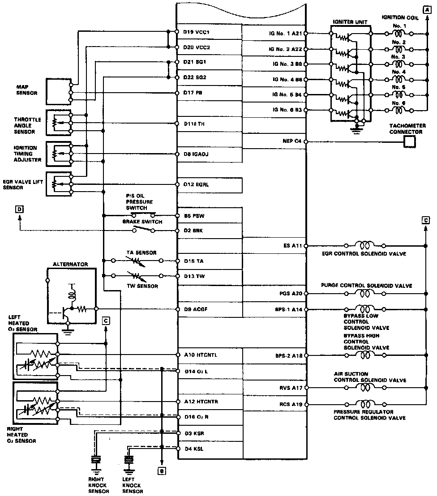
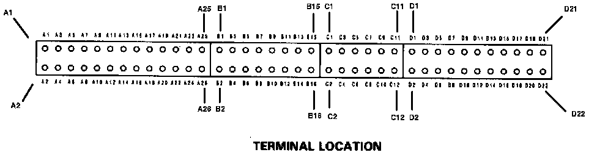

Connector Views



FUSES
(1) NO. 15 (ACG) (7.5 A)
(2) STOP & HORN (20 A)
(3) MAIN FUSE (BATTERY) (120 A)
(4) MAIN FUSE (IG SW) (5O A)
(5) MAIN FUSE (FUSE BOX) (50 A)
(6) No. 5 (20A)
(7) NO. 25 (IG COIL) (30 A)
(8) No. 22 (FUEL PUMP) (20 A)
(9) No. 13 (BACK UP LT) (7.5 A)
(10) No. 3 (RR DEF) (15 A)
(11) No. 14 (EFI STS) (7.5 A)
*: In the under-hood fuse/reley box